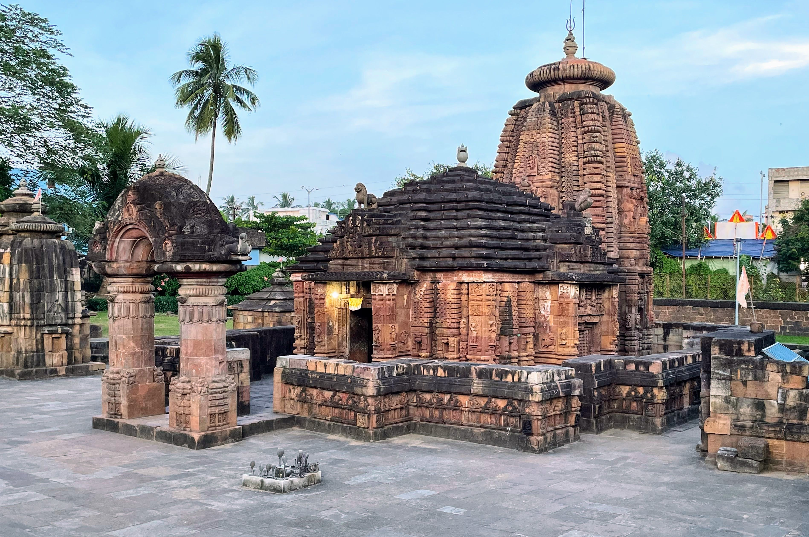
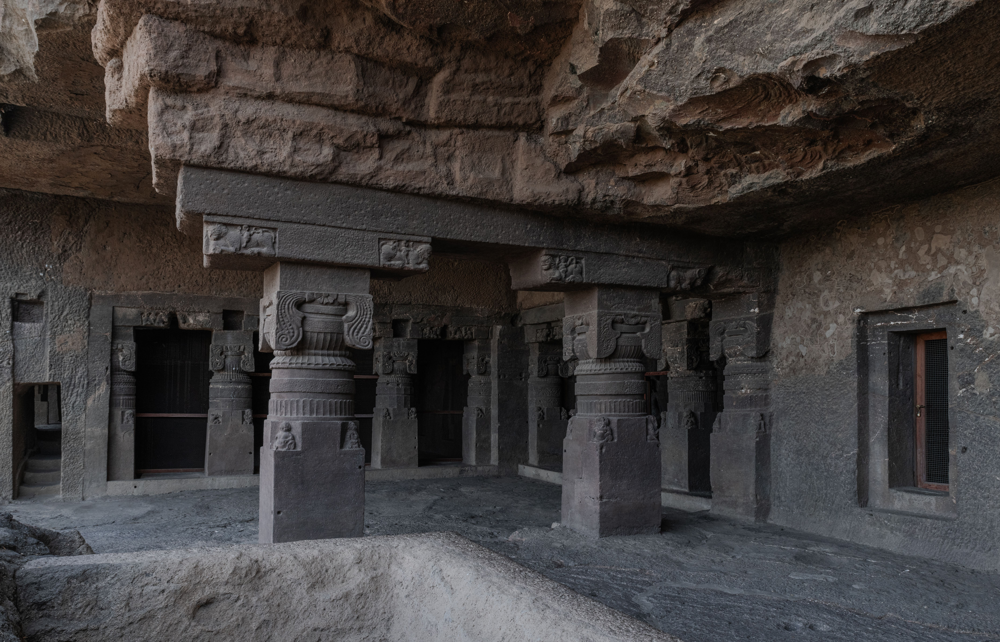
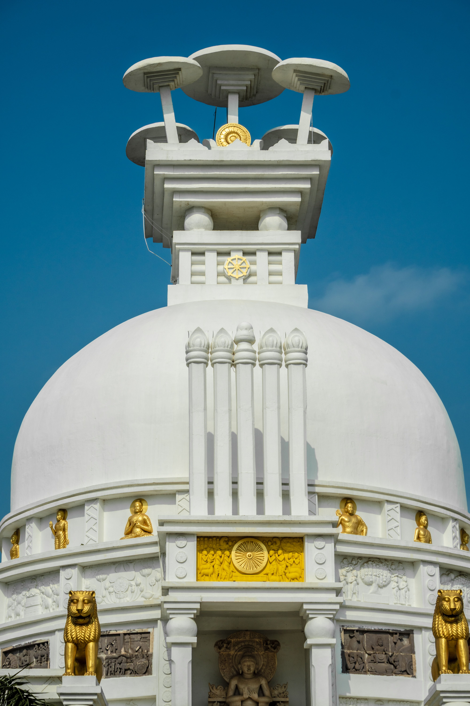
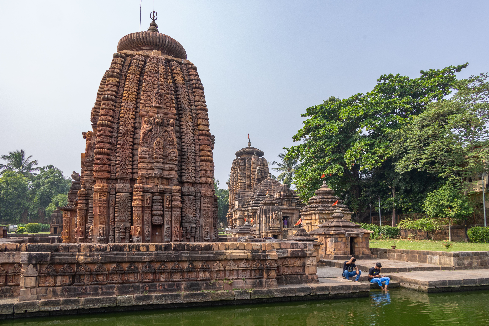
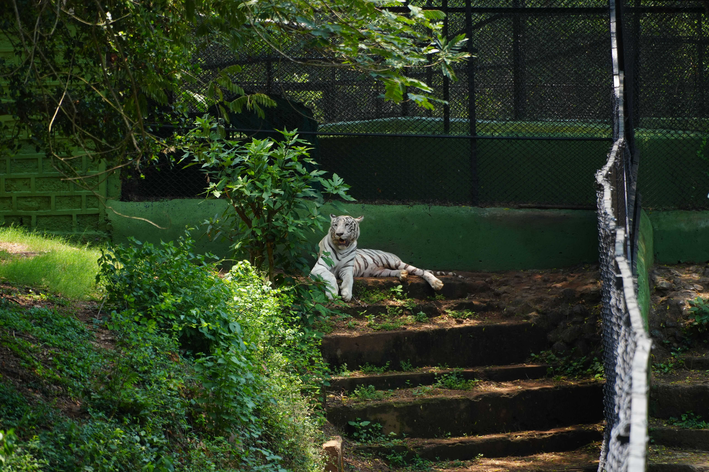
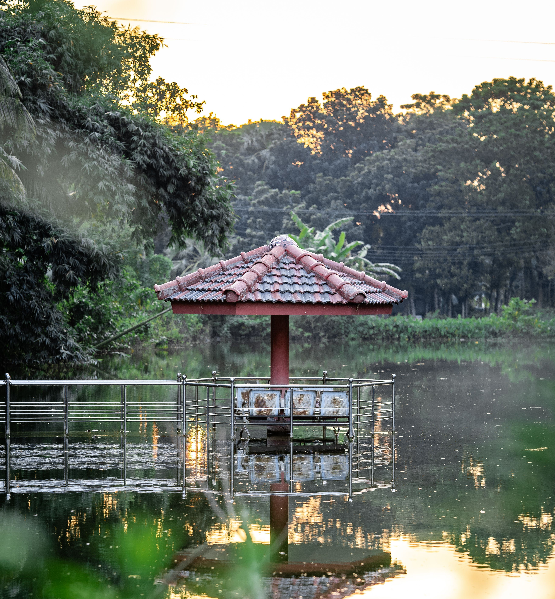
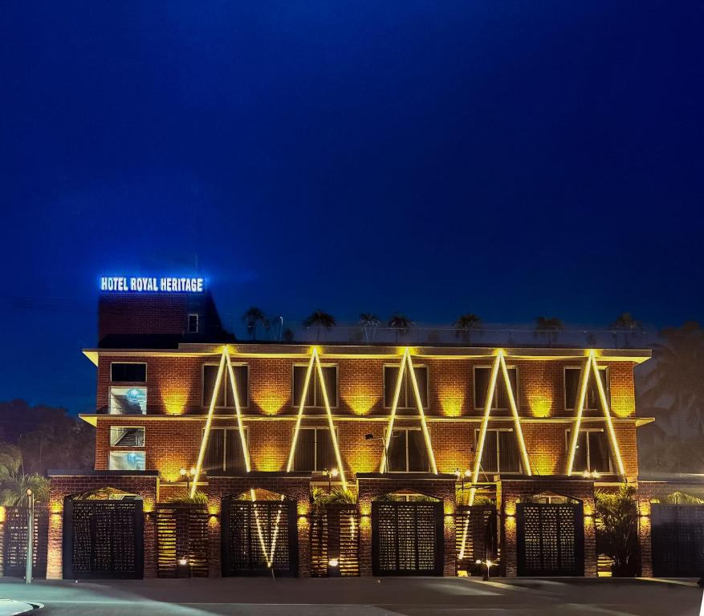
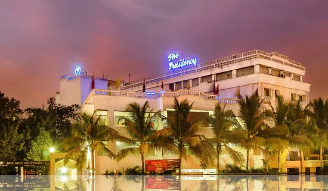

Ancient Heritage
Magnificent temples and historic sites
DISCOVER THE TIMELESS CHARM OF
Ancient Temples | Rich Culture | Unforgettable Experiences
The City of Temples
WHY VISIT
Bhubaneswar is a city where ancient heritage meets modern life. Known as the City of Temples, it brings together history, culture, spirituality and natural beauty.

Magnificent temples and historic sites
Parks, lakes and peaceful surroundings
Festivals, art and traditional crafts
Comfortable stay, food and connectivity
MUST VISIT
Explore the iconic landmarks that make Bhubaneswar special.
One of the most important landmarks of Bhubaneswar and a remarkable example of temple architecture.
EXPLORE
Ancient rock-cut caves that offer a glimpse into the region's history and heritage.
EXPLORE
A peaceful destination known for its Buddhist heritage and scenic surroundings.
EXPLORE
A beautiful example of Kalinga architecture with intricate artistic details.
EXPLORE
A popular wildlife destination surrounded by greenery and natural landscapes.
EXPLORE
CAPTURE THE MOMENT
From ancient architecture to natural landscapes, Bhubaneswar offers countless moments worth capturing.
WHERE TO STAY
Choose a stay that fits your travel experience.

Comfortable rooms, modern facilities and a premium city experience.
VIEW STAY
Experience traditional Odisha-inspired surroundings with modern comfort.
VIEW STAY
A convenient and comfortable option for travellers exploring the city.
VIEW STAYPLAN YOUR JOURNEY
A simple route to experience the heritage, culture and nature of Bhubaneswar.
Start your journey with the historic heart of Bhubaneswar and explore its remarkable temples and ancient heritage.
Morning — Lingaraj Temple
Afternoon — Mukteshwar Temple
Evening — Udayagiri & Khandagiri
Spend the second day exploring peaceful surroundings, wildlife and some of the city's scenic locations.
Morning — Nandankanan
Afternoon — Dhauli Shanti Stupa
Evening — Sunset & Local Experience